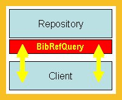
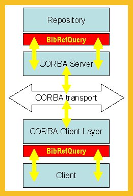
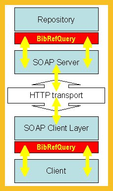

|
||||||||||
| PREV CLASS NEXT CLASS | FRAMES NO FRAMES | |||||||||
| SUMMARY: NESTED | FIELD | CONSTR | METHOD | DETAIL: FIELD | CONSTR | METHOD | |||||||||
public interface BibRefQuery
The interface BibRefQuery is a fundamental part of the Bibliographic Query
Service. It allows searching for and retrieving citations from a bibliographic
repository. The result of the query methods is again of type BibRefQuery which
allows further to refine the query. When the caller is satisfied with the query
results, the retrieval methods can be used to get either a list of citations (of type
BibRef), or an XML document representing citations.
Squeezing all query and retrieval methods into one interface allows to build very flexible systems, both distributed (where the client and repository parts are executed on different computers) and stand-alone (both parts are linked together into one process).
| For example, this picture shows a client linked together with a repository implementation. These two parts communicate entirely via BibRefQuery interface. Each of them can be replaced without changing the other one. |  |
|---|---|
| In this example, a client uses BibRefQuery interface to communicate only with a local implementation of a distributed architecture (a CORBA communication protocol in this case). The repository implementation is similarly shielded by the same interface from the communication protocol layer. |  |
| The last picture shows yet another example of a distributed architecture showing the parts which must be changed when a different communication protocol is used (the SOAP-HTTP in this case). Note that both the client and repository implementation remained untouched. |  |
public NameOfAnImplementation (String[] args, Hashtable props) {...}
where both args and props contain implementation
specific parameters and properties. However, some properties are
more probable to be used - the suggested names for them are defined
either in this interface or in the "sister" interface BibRefSupport.
The use of this constructor makes easier to load dynamically different implementations.
The methods of the BibRefQuery interface can be divided into three groups.
The first group deals with connections to bibliographic repositories - here are
methods connect, disconnect, destroy,
getCollectionId, and isReady.
The second and the most interesting group contains the query methods.
As mentioned above, these methods (mostly) return an another query collection
which is again query-able. Here belong methods find, findByAuthor,
findById, query, getBibRefCount, and sort.
The last group has methods for retrieving citations from the resulting query collection.
The retrieval methods also allow to return citations not fully populated with all
available attribute data (for example, the long abstracts can be asked for only later).
Here belong methods getAllBibRefs, getBibRefs,
getAllIDs, getAllBibRefsAsXML,
getBibRefsAsXML, and getBibRefAsXML.
There are several places where method arguments represent attribute names:
find, a list of attributes that should be
searched.
BibRef instances
but not necessarily fully populated - they may contain only a subset of attributes,
the excluded attribute lists used in several methods.
sort).
Therefore, this interface defines several rules how to specify attribute names whenever they have to be expressed as strings. The existence of these rules will make the implementations interoperable. But, of course, they can be ignored if the interoperability is not an issue.
The following rules define how to create stringified names for individual attributes.
BibRefSupport interface.
BibRef are equal to the
member names of this class. For example, identifier, type,
title, authors.
BibRef,
and of attributes of other classes, are also equal to the member names but additionally
they must be qualified by the resource type using two underscores ( __ ).
For example, Book__isbn, JournalArticle__from_journal,
Journal__name.
The somewhat unusual double underscore is suggested here because in some query languages (where the stringified attribute names can be used as variables) is an underscore the only non-alphabetic character allowed for variables.
Be aware, however, that dropping the qualifier may compromise extendibility because a caller that expects a unique attribute name may break if another citation type is added with the same attribute name.
dynamic properties
are equal to their property names, applying the rule about qualification as defined above.
Thus, for example, an attribute registry_number hidden in member
BibRef.properties will be stringified simply as registry_number,
and an attribute location hidden in properties of a sub-class
representing books will be stringified as Book__location.
dynamic properties
for instances without their own sub-class must be qualified (as described above) by
the contents of their BibRef.type. For example, a citation can be of type
letter, but there is no sub-class Letter. Therefore, an attribute
type has value letter. This value is then used to create a qualified
stringified name letter__subject.
Several methods dealing with queries and sorting use a list of criteria. The criteria define how the matching or ordering should be done.
Each criterion is fully defined by an instance of BiblioCriterion.
Such definitions can be obtained from a controlled vocabulary - see
BibRefSupport.getSupportedCriteria().
Because each criterion is uniquely identifiable by its name, the querying and sorting methods use only lists of criteria names, not lists of full criteria definitions.
Several methods use parameter with excluded attributes, or a parameter with only-included attributes. There are two different meanings and uses of such attributes lists.
The first meaning is used by the query methods. They return a new query collection. From the practical and performance reasons it may be sometimes useful to define in advance that the citations representing the resulting query collection do not need to contain all attributes. The excluded list of attribute names defines what attributes are not needed - typical use is to exclude abstracts which may be quite long. This, using the excluded list in the query method means that the resulting query collection will never have all attributes fully filled with data (unless, of course, the implementation ignores the excluded list).
The second meaning is for the retrieval methods. They return citations from a current query collection and can decide that only some attributes in the returned citations are filled with data (such parameter list is always named onlyAttrs). It may again mean that less data will be transferred but it is a post-act decision because the query collection has already all data and only does not return them now, but the next retrieval method (on the same collection) can retrieve them.
The both uses may be applied in different scenarios, and their efficiency is very dependent on the repository implementation. Sometimes the creation of a query collection already includes heavy data manipulation - therefore, the first usage may help with performance, But sometimes the resulting query collection is more or less a virtual collection and the real data transfer is applied only when the citations are being retrieved. In this case, the later scenario may be more efficient.
BibRef,
BibRefSupport,
BiblioCriterion| Field Summary | |
|---|---|
static java.lang.String |
PROP_CRITERIONS
A property name specifying a list of searching and ordering criteria names (type of the property value should be String[]). |
static java.lang.String |
PROP_EXCLUDED_ATTRS
A property name specifying a list of excluded attribute names (the type of the property value should be String[]). |
| Method Summary | |
|---|---|
void |
connect()
It creates a connection to a bibliographic repository, or/and it makes all necessary initialization steps needed for further communication. |
void |
connect(byte[] collectionId)
It creates a connection to a bibliographic repository, or/and it makes all necessary initialization steps needed for further communication, and it makes the collection described by collectionId the current collection. |
void |
destroy()
It frees all resources related to this query collection. |
void |
disconnect()
It disconnects from the repository. |
BibRefQuery |
find(java.lang.String[] keywords,
java.lang.String[] attrs,
java.util.Hashtable properties)
The easiest direct method for querying a repository. |
BibRefQuery |
findByAuthor(BiblioProvider author,
java.util.Hashtable properties)
This is a convenient method for a common query. |
BibRef |
findById(java.lang.String bibRefId)
This is a convenient method returning just one citation. |
BibRef |
findById(java.lang.String bibRefId,
java.lang.String[] onlyAttrs)
This is a convenient method returning just one citation, perhaps with a limited number of attributes. |
BibRef[] |
getAllBibRefs()
It returns all citations from the current collection as a (possibly big) array. |
BibRef[] |
getAllBibRefs(java.lang.String[] onlyAttrs)
It returns all citations from the current collection as a (possibly big) array, perhaps with a limited number of attributes. |
java.io.InputStream |
getAllBibRefsAsXML()
It returns all citations from the current collection as an XML stream. |
java.lang.String[] |
getAllIDs()
A convenient method returning just identifiers of all current citations. |
java.lang.String |
getBibRefAsXML(BibRef bibRef)
A convenient utility method converting a given citation to its XML representation. |
int |
getBibRefCount()
It returns the number of citations in the current collection. |
java.util.Enumeration |
getBibRefs()
It returns an enumeration of all citations from the current collection. |
java.util.Enumeration |
getBibRefs(java.lang.String[] onlyAttrs)
It returns an enumeration of all citations from the current collection, perhaps with a limited number of attributes. |
java.util.Enumeration |
getBibRefsAsXML()
It returns an enumeration of all citations from the current collection. |
byte[] |
getCollectionId()
It returns an identification of the current query collection. |
boolean |
isReady()
It checks if the repository is available. |
BibRefQuery |
query(java.lang.String query,
java.util.Hashtable properties)
It queries the current collection using a query language. |
BibRefQuery |
sort(java.lang.String[] orderedBy,
java.util.Hashtable properties)
It sorts the current collection and returns another collection which is a sorted copy of the current collection. |
| Field Detail |
|---|
static final java.lang.String PROP_EXCLUDED_ATTRS
A property name specifying a list of excluded attribute names (the type of the property value should be String[]).
The list is used to define attributes which are not returned in the resulting citations (see discussion on excluded attributes).
find,
query,
Constant Field Valuesstatic final java.lang.String PROP_CRITERIONS
find,
query,
Constant Field Values| Method Detail |
|---|
byte[] getCollectionId()
It returns an identification of the current query collection.
At the beginning, the identification usually contain a bibliographic
repository name or its contents description. But later, usually after
connect() or after the first query, the identification may contain
information rich enough to be able to re-create the whole collection
(e.g. it can contain IDs of all records in the given collection).
An implementation is not required to provide a persistent collection
identification. However, if it does provide, it should also be
able to accept the same identifier in the connect
method, and to use it to re-create the same collection.
void connect()
throws BibRefException
It creates a connection to a bibliographic repository, or/and it makes all necessary initialization steps needed for further communication.
However, there should be no need to call this method explicitly, the other methods should do it automatically before they need something from the repository.
BibRefException - if the connection cannot be established
void connect(byte[] collectionId)
throws BibRefException
It creates a connection to a bibliographic repository, or/and it makes all necessary initialization steps needed for further communication, and it makes the collection described by collectionId the current collection.
collectionId - a (usually persistent) token allowing to re-create
a collection; the parameter is the same as an identifier returned
earlier by method getCollectionId()
BibRefException - if the connection cannot be established, or if the
collection with the given ID cannot be re-createdconnect without parametersboolean isReady()
void disconnect()
It disconnects from the repository.
The caller can use this method to announce that the current query collection will not be needed soon. However, it may still be possible to connect to it later again.
destroy for more permanent action
void destroy()
throws BibRefException
It frees all resources related to this query collection.
The caller explicitly announces no interest in the current
query collection at all. The existence of two separate
methods disconnect() and destroy allows more flexibility
for cases where an implementation deals with, for example,
temporary repositories.
BibRefException - if the connection to the repository is brokendisconnect for less permanent action
BibRefQuery find(java.lang.String[] keywords,
java.lang.String[] attrs,
java.util.Hashtable properties)
throws BibRefException
The easiest direct method for querying a repository.
It is modeled on examples of web-based searches: A caller can specify virtually anything in the list of keywords and the implementation tries to search for these in as many attributes as possible and reasonable, applying logical AND between them. However, a caller can also specifically limit the search only to attributes specified in the searched list.
Note that there is no real query language used by this method, therefore, this method is not suitable for queries requiring logical operators (others than AND).
The query result can be influenced by the additional properties:
PROP_EXCLUDED_ATTRS is of type String[]
and contains list of attributes names which should not be
included in the resulting query collection. See discussions on
excluded attributes and on
stringified attribute names,
PROP_CRITERIONS is also of type String[]
and contains list of criteria names. The caller specifies here
what criteria she wishes, and this method can change this property
and return here the criteria really used for the query.
See also discussion about criteria.
keywords - keyword or phrases that are being looked forattrs - attributes names that should be searched; if this list is
empty the implementation should search all reasonable
attributesproperties - specify attributes excluded from the results and
requested criteria for the query
BibRefException - if query failed (which can have many reasons :-))
(note that an empty result does not cause an exception)
BibRefQuery findByAuthor(BiblioProvider author,
java.util.Hashtable properties)
throws BibRefException
This is a convenient method for a common query.
The search is done only for attributes having non empty values in parameter author. For example, a search for citations written by authors with surname Doe can be specified by sending an instance of BiblioPerson with surname filled with Doe and with other attributes empty. Or, a search for institution EBI can be specified by sending an instance of BiblioOrganization with name containing EBI.
The query result can be influenced by the additional properties:
PROP_EXCLUDED_ATTRS is of type String[]
and contains list of attributes names which should not be
included in the resulting query collection. See discussions on
excluded attributes and on
stringified attribute names,
PROP_CRITERIONS is also of type String[]
and contains list of criteria names. The caller specifies here
what criteria she wishes, and this method can change this property
and return here the criteria really used for the query.
See also discussion about criteria.
author - contains one or more attributes that are being search forproperties - specify attributes excluded from the results and
requested criteria for the query
BibRefException - if query failed (which can have many reasons :-))
(note that an empty result does not cause an exception)find,
BiblioPerson,
BiblioOrganisation,
BiblioService
BibRef findById(java.lang.String bibRefId)
throws BibRefException
This is a convenient method returning just one citation.
It queries the current collection in order to find and to retrieve
a citation with the given identifier. It depends on the implementation
what could be used as an identifier - see BibRef.identifier.
bibRefId - an identifier of a citation that is being looked for
BibRefException - if such citation was not found (or something else
bad happened)findById with limited returned attributes
BibRef findById(java.lang.String bibRefId,
java.lang.String[] onlyAttrs)
throws BibRefException
This is a convenient method returning just one citation, perhaps with a limited number of attributes.
It queries the current collection in order to find and to retrieve
a citation with the given identifier. It depends on the implementation
what could be used as an identifier - see BibRef.identifier.
The returned citation will contain at least attributes whose names are specified by the parameter onlyAttrs (see discussion on only-included attributes.
It is meant to provide more lightweight citation. The implementation may provide more attributes than specified in onlyAttrs (e.g. it is always recommended to include an attribute representing a unique identifier of the citation even if it is not asked for).
Note that one can ask only for attributes that are available in the
current collection. If the collection was already created
without some attributes (using property
PROP_EXCLUDED_ATTRS, e.g in method find) one cannot
expect to get them even if they are asked for by the parameter
onlyAttrs.
bibRefId - an identifier of a citation that is being looked foronlyAttrs - a list of attribute names; at least these attributes
will be included in the returned citation
BibRefException - if such citation was not found (or something else
bad happened)findById
BibRefQuery query(java.lang.String query,
java.util.Hashtable properties)
throws BibRefException
It queries the current collection using a query language.
Use this method when the simple find method is not sufficient.
For example, when more logical or relational operators are needed
to express the query,
This specification does not propose any specific query language to use (but may in the future). Roughly speaking, the query method takes a query string and passes it to the repository implementation, and if the implementation understands the query the world is saved.
Again, the query result can be influenced by the additional properties:
PROP_EXCLUDED_ATTRS is of type String[]
and contains list of attributes names which should not be
included in the resulting query collection. See discussions on
excluded attributes and on
stringified attribute names,
PROP_CRITERIONS is also of type String[]
and contains list of criteria names. The caller specifies here
what criteria she wishes, and this method can change this property
and return here the criteria really used for the query.
See also discussion about criteria.
query - an expression in a query languageproperties - specify attributes excluded from the results and
requested criteria for the query
BibRefException - if query failed (which can have many reasons :-))
(note that an empty result does not cause an exception)find
int getBibRefCount()
throws BibRefException
It returns the number of citations in the current collection.
BibRefException - if a connection with the repository is broken
BibRefQuery sort(java.lang.String[] orderedBy,
java.util.Hashtable properties)
throws BibRefException
It sorts the current collection and returns another collection which is a sorted copy of the current collection.
This is not strictly speaking a query method but it also returns a query collection.
The sorting result can be influenced by an additional property
PROP_CRITERIONS (of type String[]) containing
a list of sorting criteria names. The caller specifies here
what criteria she wishes, and this method can change this property
and return here the criteria really used for sorting.
orderedBy - a list of attribute names that the collection should
be sorted byproperties - FIXME: docs & params out of sync
BibRefException - if sorting failed (which may also happen when
the collection is too large)
BibRef[] getAllBibRefs()
throws BibRefException
It returns all citations from the current collection as a (possibly big) array. Obviously, the repository implementation may limit the number of returned records.
Some attributes may be missing (empty) if the property
PROP_EXCLUDED_ATTRS was used for creating the current
collection. See discussion on
excluded attributes.
BibRefException - if the collection is too large, or if the connection
to the repository is brokengetAllBibRefs with limited returned attributes
BibRef[] getAllBibRefs(java.lang.String[] onlyAttrs)
throws BibRefException
It returns all citations from the current collection as a (possibly big) array, perhaps with a limited number of attributes.
The returned citations will contain at least attributes whose names are specified by the parameter onlyAttrs. It is meant to provide more lightweight citations. The implementation may provide more attributes than specified in onlyAttrs (e.g. it may be always good to include an attribute representing a unique identifier of a citation even if it is not asked for). See discussion on only-included attributes.
Note that one can ask only for attributes that are available in the
current collection. If the collection was already created
without some attributes (using property
PROP_EXCLUDED_ATTRS, e.g in method find) one
cannot expect to get them even if they are asked for by the parameter
onlyAttrs.
onlyAttrs - attributes to attempt to include
BibRefException - if the collection is too large, or if the connection
to the repository is brokengetAllBibRefs with all attributes,
getAllIDs
java.lang.String[] getAllIDs()
throws BibRefException
A convenient method returning just identifiers of all current citations.
BibRefException - if the collection is too large, or if the connection
to the repository is broken
java.util.Enumeration getBibRefs()
throws BibRefException
It returns an enumeration of all citations from the current collection.
The type of elements in the enumeration is BibRef (or of its
sub-classes).
Some attributes may be missing (empty) if the property
PROP_EXCLUDED_ATTRS was used for creating the current
collection.
BibRefException - if the connection to the repository is brokengetAllBibRefs
java.util.Enumeration getBibRefs(java.lang.String[] onlyAttrs)
throws BibRefException
It returns an enumeration of all citations from the current collection,
perhaps with a limited number of attributes.
The type of elements in the enumeration is BibRef (or of its
sub-classes).
The citations available through the enumeration will contain at least attributes whose names are specified by the parameter onlyAttrs. It is meant to provide more lightweight citations. The implementation may provide more attributes than specified in onlyAttrs (e.g. it may be always good to include an attribute representing a unique identifier of a citation even if it is not asked for).
Note that one can ask only for attributes that are available in the
current collection. If the collection was already created
without some attributes (using property
PROP_EXCLUDED_ATTRS, e.g in method find) one cannot
expect to get them even if they are asked for by the parameter
onlyAttrs.
onlyAttrs - attributes to attempt to fetch
BibRefException - if the connection to the repository is brokengetAllBibRefs,
getBibRefs with all attributes
java.io.InputStream getAllBibRefsAsXML()
throws BibRefException
It returns all citations from the current collection as an XML stream. The contents of such XML stream is widely repository dependent.
Some attributes may be missing (empty) if the property
PROP_EXCLUDED_ATTRS was used for creating the current
collection.
BibRefException - if the collection is too large, or if the connection
to the repository is brokengetAllBibRefs
java.util.Enumeration getBibRefsAsXML()
throws BibRefException
It returns an enumeration of all citations from the current collection. The type of elements in the enumeration is String. Each element represents one citation as an XML string. The contents of such XML string is widely repository dependent.
Some attributes may be missing (empty) if the property
PROP_EXCLUDED_ATTRS was used for creating the current
collection.
BibRefException - if the connection to the repository is brokengetBibRefs,
getAllBibRefsAsXML
java.lang.String getBibRefAsXML(BibRef bibRef)
throws BibRefException
A convenient utility method converting a given citation to its XML representation. It is useful, for example, in cases when a program annotates citations on-the-fly and needs them in the same XML format.
The XML format depends on the repository where the citation comes from.
bibRef - a citation being converted into an XML format
BibRefException - if the implementation needs it :-)
|
||||||||||
| PREV CLASS NEXT CLASS | FRAMES NO FRAMES | |||||||||
| SUMMARY: NESTED | FIELD | CONSTR | METHOD | DETAIL: FIELD | CONSTR | METHOD | |||||||||